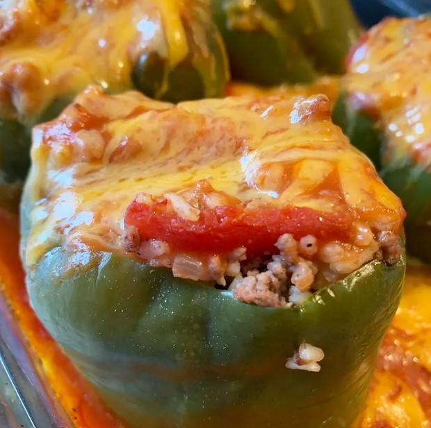

Stuffed Green Peppers

Description
Delicious stuffed green peppers that are easy to make. Each green bell
pepper contains ground beef, onion, tomatoes, rice, and cheese, and is
cooked in tomato soup.
Ingredients
- 6 green bell peppers
- 1 pound ground beef
- ⅓ cup chopped onion
- 1 (14.5 ounce) can whole peeled tomatoes, chopped
Steps
-
Cut the tops off bell peppers and remove the seeds. Cook bell peppers in
boiling water for 5 minutes; drain. Sprinkle salt inside each bell
pepper and set aside.
-
Place ground beef and onion in a large skillet over medium heat; cook
and stir until beef is browned, about 5 minutes. Drain off excess fat
and season with salt and pepper. Stir in tomatoes, 1/2 cup water, rice,
and Worcestershire sauce; reduce heat to low, cover, and simmer until
rice is tender, about 15 minutes. Remove from heat and stir in cheese.
-
Stuff each bell pepper with beef and rice mixture; arrange open-side up
in a baking dish.
-
Bake in the preheated oven until heated through and cheese is melted and
bubbly, about 25 to 30 minutes.